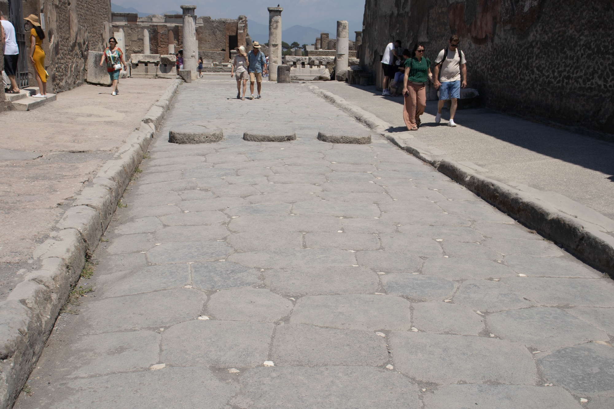
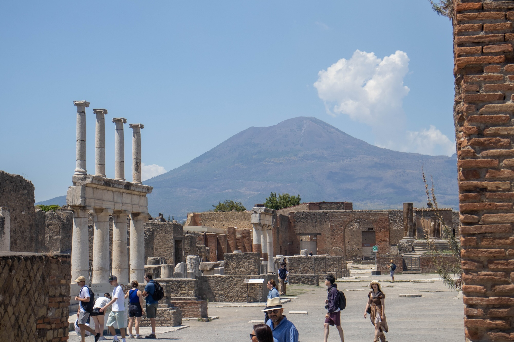

Travel Notes
Essay
Photographs
Naples and Pompeii
Naples
Summary of an eventful trip to Naples in summer 2026.
Travel essay
Summary of an eventful trip to Naples in summer 2026.
Photographs

Pompeii stones

View toward the volcano from Pompeii
Close